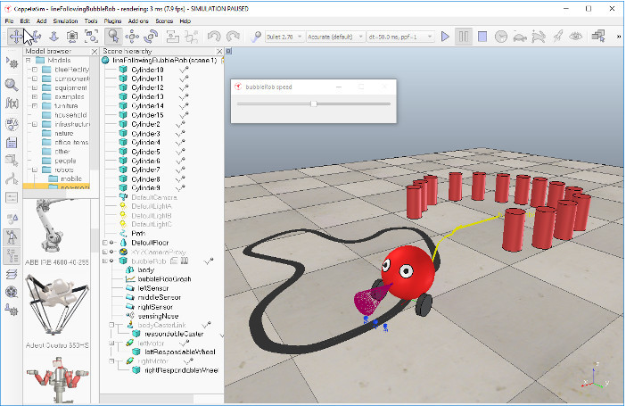
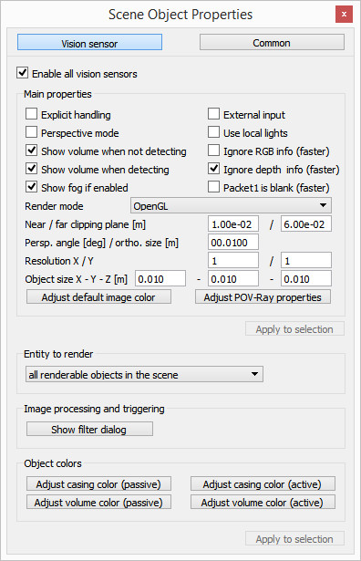

分組作業 <<
Previous Next >> Assignment2
Assignment1
what do you need to know from http://www.coppeliarobotics.com/helpFiles/index.html to implement a four-wheeled robot?
泡泡龍跟線走
pdf檔
首先開啟教程一的BubbleRob檔案，下圖是接下來的仿真場景。

首先創建三個視覺傳感器的第一個，並拖至泡泡龍本體的下方，選擇[Menu bar --> Add --> Vision sensor --> Orthographic type]，並雙擊對話框將對話框內嵾數修改如下:

視覺傳感器需面對地面，選擇它，在orientation dialog/orientation tab將數值設定為[180;0;0]。
(path edit mode)將視覺傳感器複製並貼上兩次，將名稱改成leftSensor，middleSensor和rightSensor，並將其都拖到泡泡龍本體下。
打開position dialog/position tab,將left sensor設[0.2;0.042;0.018]，middle sensor設[0.2;0;0.018]，right sensor設[0.2;-0.042;0.018]。
現在修改環境，，移去BubbleRob前面的幾個圓柱體，並按[Menu bar --> Add --> Path --> Circle type]在地上加入線，有兩種方法使線形狀改變線路徑
1.點線，crtl加一節點並拖動。
2.點選path edit modle 即可調整
一旦對路徑線條滿意後，雙擊路徑圖案，將Show orientation of points，Show path line和Show current position on path的打勾取消。然後按下Show path shaping dialog，將Path shaping enabled打勾，將type轉到horizontal segment，再將Scaling factor調整為4，最後將顏色調整為黑色，最後還須對路徑作一重要調整，現在路徑的z位置與地板的z位置重合，者樣會使我們有時看到地板，有時看到路徑，為避免此現象，只需將路徑上移0.5即可。
最後一步是調整BubbleRob的控制器，使其也將遵循黑色路徑。 打開附加到bubbleRob的子腳本，並將其替換為以下代碼：
------------------------------
function speedChange_callback(ui,id,newVal)
speed=minMaxSpeed[1]+(minMaxSpeed[2]-minMaxSpeed[1])*newVal/100
end
function sysCall_init()
-- This is executed exactly once, the first time this script is executed
bubbleRobBase=sim.getObjectAssociatedWithScript(sim.handle_self)
leftMotor=sim.getObjectHandle("leftMotor")
rightMotor=sim.getObjectHandle("rightMotor")
noseSensor=sim.getObjectHandle("sensingNose")
minMaxSpeed={50*math.pi/180,300*math.pi/180}
backUntilTime=-1 -- Tells whether bubbleRob is in forward or backward mode
floorSensorHandles={-1,-1,-1}
floorSensorHandles[1]=sim.getObjectHandle("leftSensor")
floorSensorHandles[2]=sim.getObjectHandle("middleSensor")
floorSensorHandles[3]=sim.getObjectHandle("rightSensor")
-- Create the custom UI:
xml = '<ui title="'..sim.getObjectName(bubbleRobBase)..' speed" closeable="false" resizeable="false" activate="false">'..[[
<hslider minimum="0" maximum="100" onchange="speedChange_callback" id="1"/>
<label text="" style="* {margin-left: 300px;}"/>
</ui>
]]
ui=simUI.reate(xml)
speed=(minMaxSpeed[1]+minMaxSpeed[2])*0.5
simUI.setSliderValue(ui,1,100*(speed-minMaxSpeed[1])/(minMaxSpeed[2]-minMaxSpeed[1]))
end
function sysCall_actuation()
result=sim.readProximitySensor(noseSensor)
if (result>0) then backUntilTime=sim.getSimulationTime()+4 end
-- read the line detection sensors:
sensorReading={false,false,false}
for i=1,3,1 do
result,data=sim.readVisionSensor(floorSensorHandles[i])
if (result>=0) then
sensorReading[i]=(data[11]<0.3) -- data[11] is the average of intensity of the image
end
print(sensorReading[i])
end
-- compute left and right velocities to follow the detected line:
rightV=speed
leftV=speed
if sensorReading[1] then
leftV=0.03*speed
end
if sensorReading[3] then
rightV=0.03*speed
end
if sensorReading[1] and sensorReading[3] then
backUntilTime=sim.getSimulationTime()+2
end
if (backUntilTime<sim.getSimulationTime()) then
-- When in forward mode, we simply move forward at the desired speed
sim.setJointTargetVelocity(leftMotor,leftV)
sim.setJointTargetVelocity(rightMotor,rightV)
else
-- When in backward mode, we simply backup in a curve at reduced speed
sim.setJointTargetVelocity(leftMotor,-speed/2)
sim.setJointTargetVelocity(rightMotor,-speed/8)
end
end
function sysCall_cleanup()
simUI.destroy(ui)
end
------------------------------
現在可以輕鬆地調整視覺感應器的線，選擇一個，按右鍵[Add --> Floating view]然後
在新添加的Floating view跟視覺感應器選起來右鍵[View --> Associate view with selected vision sensor]
最後刪除再教程一的輔助項目，刪除圖像處理視覺傳感器(vision sensor)，該浮動視圖表示障礙物的清除。 通過距
離對話框也刪除距離計算對象。
分組作業 <<
Previous Next >> Assignment2